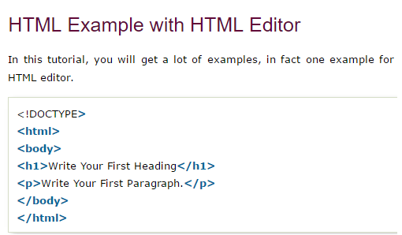
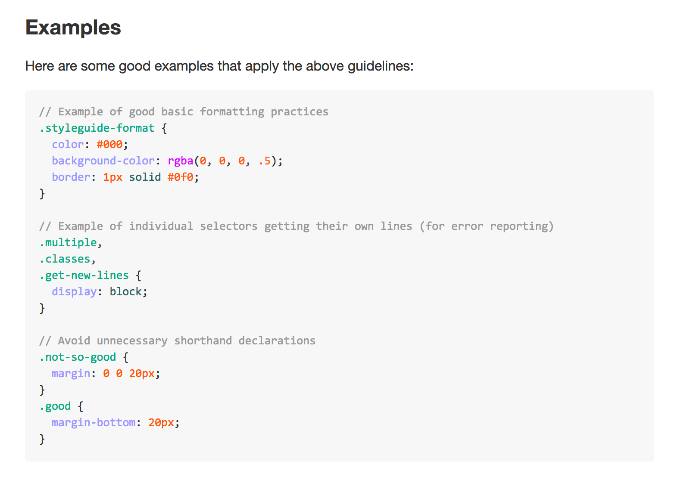
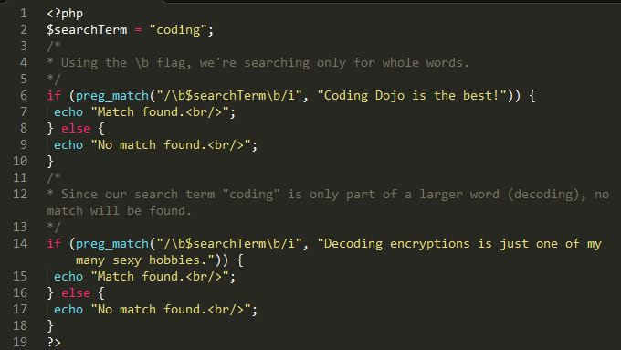
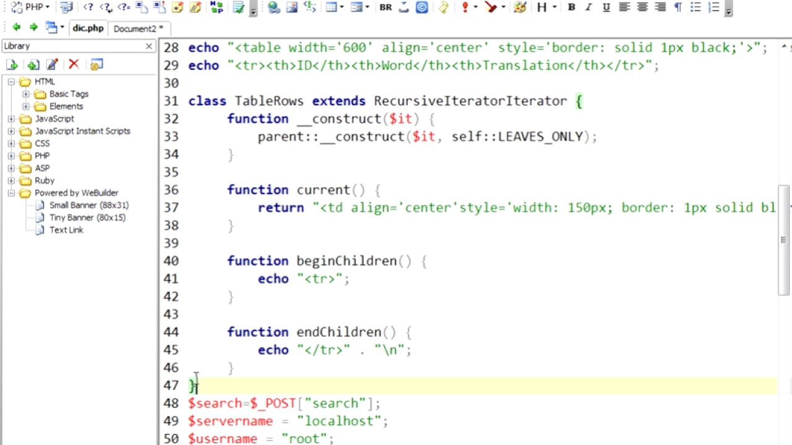

Linguagem - HTML
HTML é a linguagem de marcação padrão para páginas da web.Com HTML, você pode criar seu próprio site. HTML é fácil de aprender - você vai se divertir!
Clique na imagem acima para ir ao link sobre HTML
Linguagem - CSS
CSS é a linguagem que usamos para definir o estilo de um documento HTML. CSS descreve como os elementos HTML devem ser exibidos. Este tutorial ensinará CSS do básico ao avançado.
Clique na imagem acima para ir ao link sobre CSS3
Linguagem - PHP
PHP é uma linguagem de script de servidor e uma ferramenta poderosa para criar páginas da Web dinâmicas e interativas. PHP é uma alternativa amplamente utilizada, gratuita e eficiente para concorrentes como o ASP da Microsoft. PHP 7 é a versão estável mais recente.
Clique na imagem acima para ir ao link sobre PHP
Linguagem - MySQL
SQL é uma linguagem padrão para armazenar, manipular e recuperar dados em bancos de dados. Nosso tutorial de SQL irá ensiná-lo a usar SQL em: MySQL, SQL Server, MS Access, Oracle, Sybase, Informix, Postgres e outros sistemas de banco de dados.
Clique na imagem acima para ir ao link sobre MySQL
Nicholas Fernandes De Goes - Nicholasfernandesdegoes@gmail.com